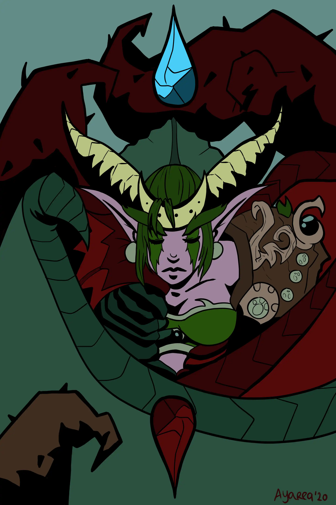
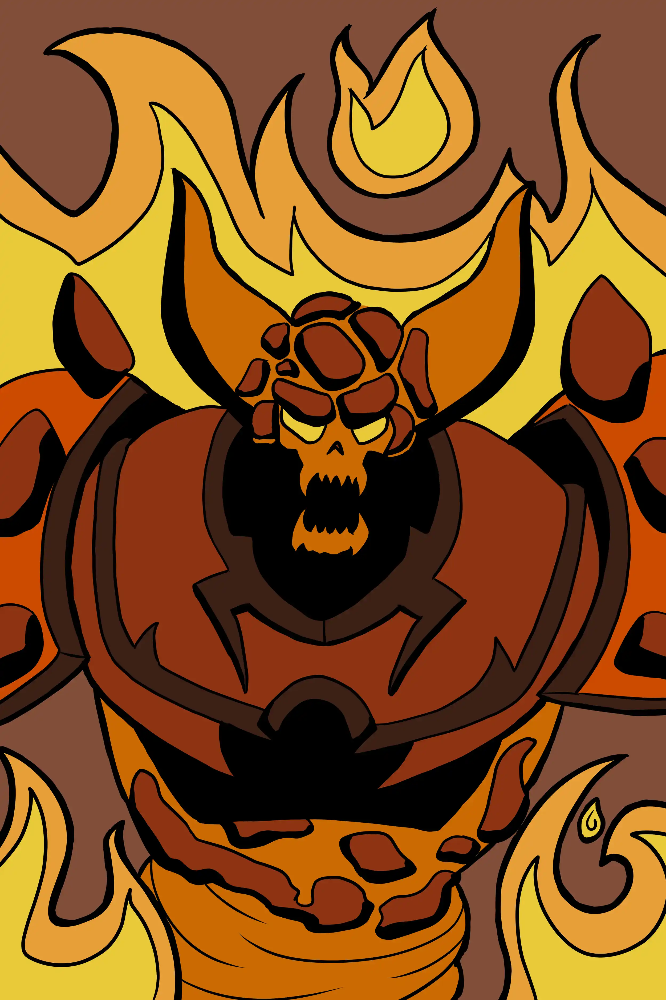
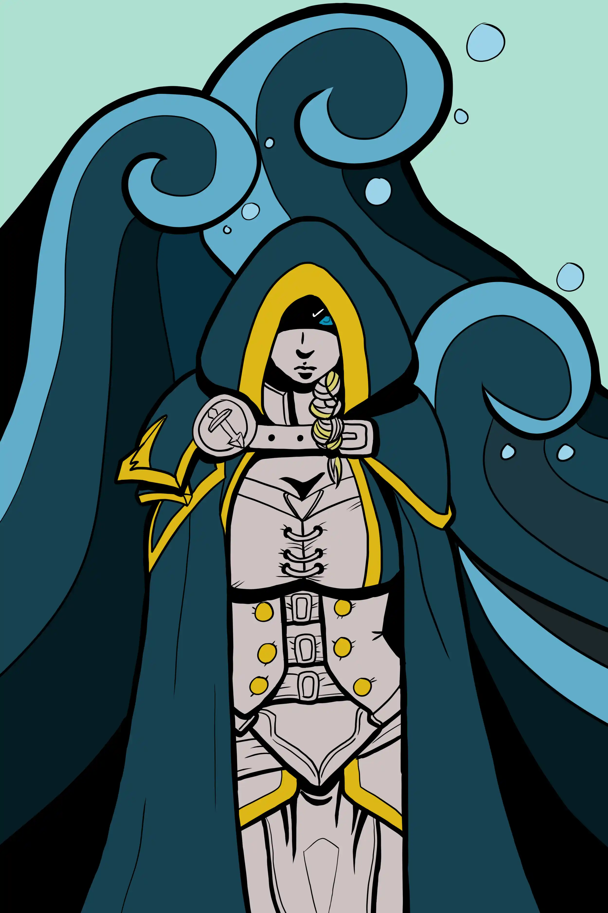
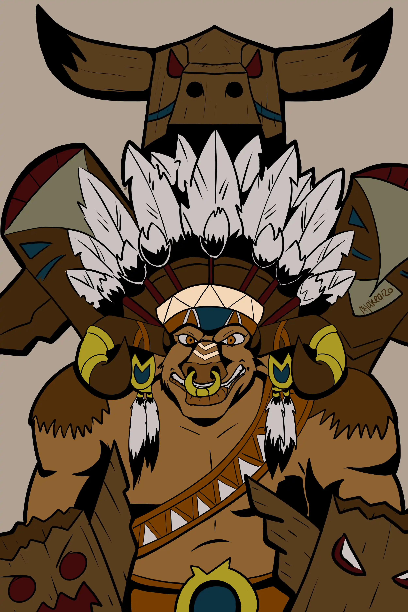
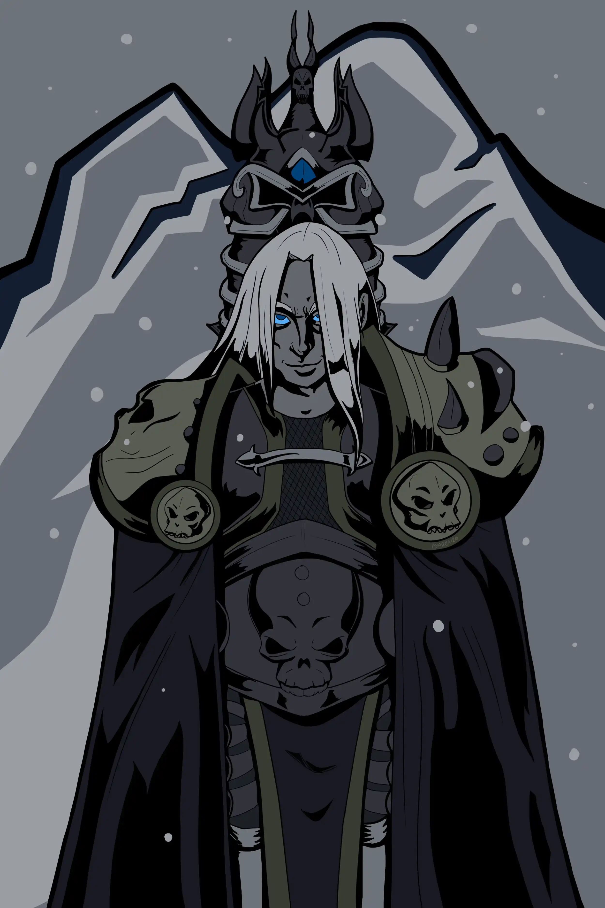

Posters
Images specifically drawn for use on services such as Displate, RedBubble, etc.





Images specifically drawn for use on services such as Displate, RedBubble, etc.
Portraits of people and animals alike.
Banners for Facebook Pages, Avatars or other kinds of Logos.
Drawings inspired and in style of Funko Pops of various other Facebook Streamers.
Stickers for use in Facebook Chat during Live Streams.
Other works that don't necessarily fit into any other categories.